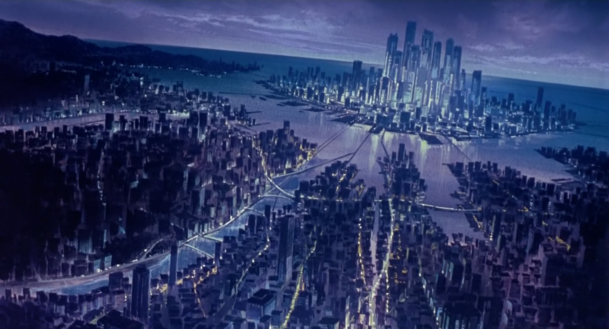
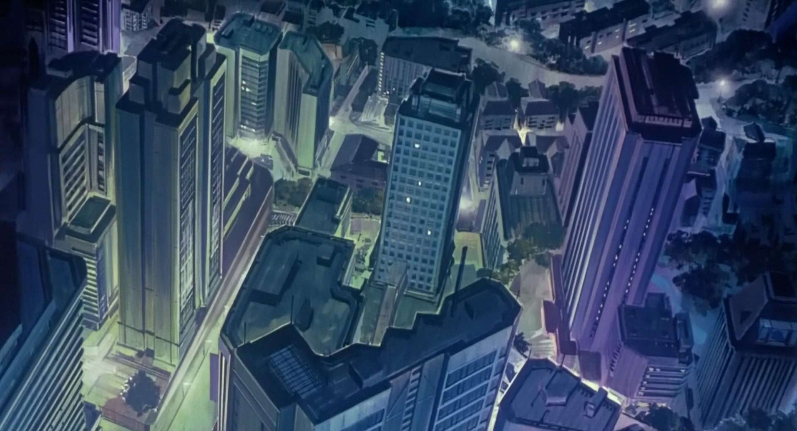
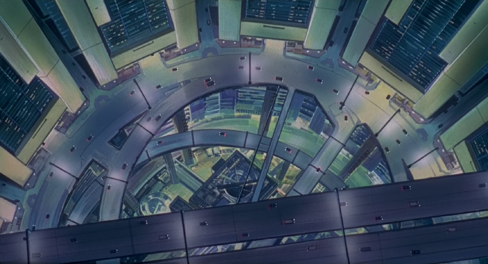
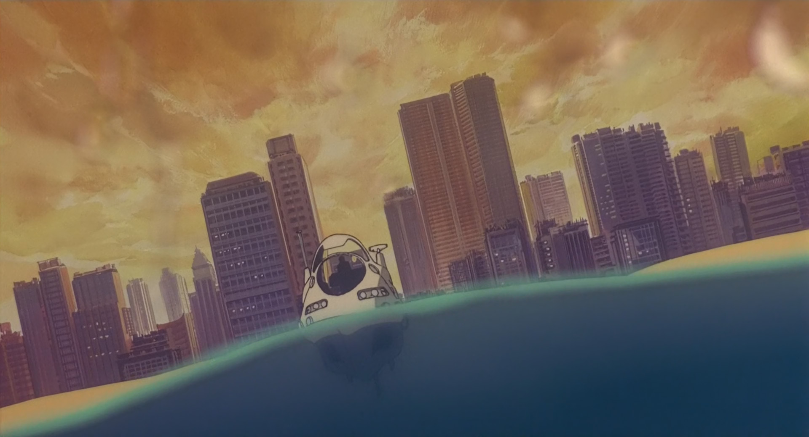
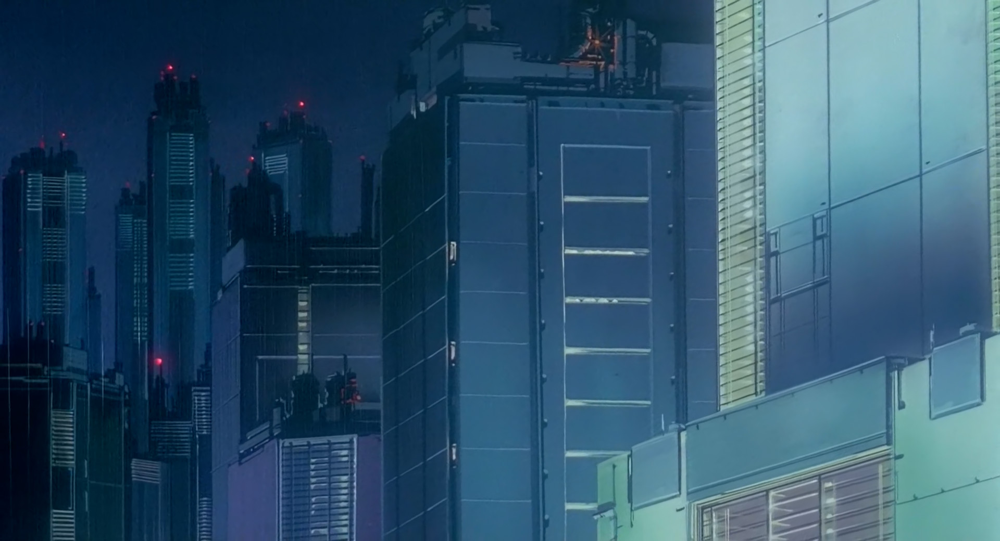
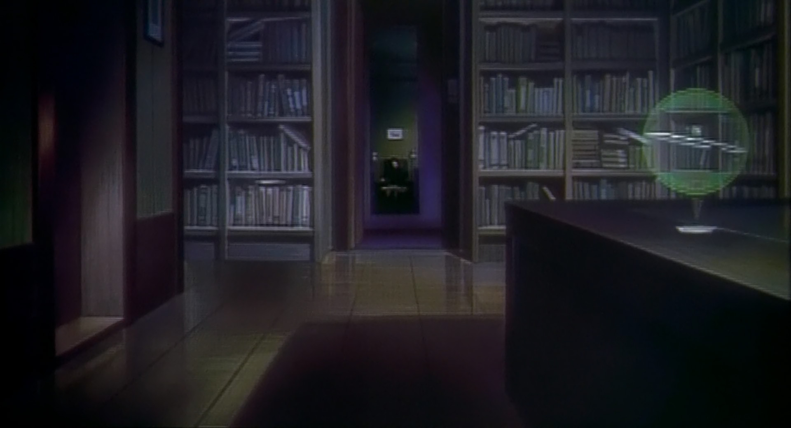

While Masamune Shirow's original manga remains one of my favorite depictions of the Ghost in the Shell universe, Mamoru Oshii managed to imbue the story with an artistic dignity and philosophical depth the source material was simply not capable of. Intensely pensive, quiet, and contemplative, this film's more wistful moments never fail to put me in a kind of trance. Its choral soundtrack leaves a haunting presence long after the end of the film, and its moody and somber depictions of the future evoke a sensation of a world out of place and out of time.





